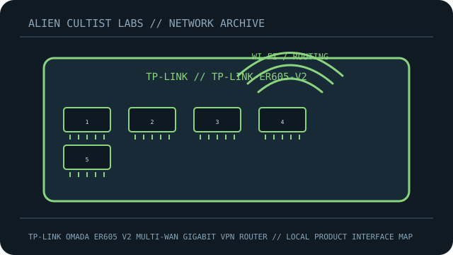

[ MODEL-SPECIFIC NETWORK HARDWARE ]
TP-Link Omada ER605 V2 Multi-WAN Gigabit VPN Router
Wired Omada gateway with configurable WAN/LAN ports, VPN functions and Gigabit Ethernet interfaces. This record is limited to the exact named model; revisions and regional SKUs may differ.

MODEL IDENTIFICATION: Match the complete model number and revision on the manufacturer label before applying specifications. Published link rates are nominal, not measured application throughput.
Published specifications and compatibility
| Exact product | TP-Link Omada ER605 V2 Multi-WAN Gigabit VPN Router |
|---|---|
| Archive subcategory | Network appliances: routers & access points |
| Physical ports | 5 × Gigabit RJ-45: 1 fixed WAN, 2 WAN/LAN configurable, and 2 LAN (per ER605 V2 documentation); USB 2.0 port. |
| Host / chassis interface | Standalone wired router/firewall, external power adapter; no built-in Wi-Fi radio. |
| Standards / protocol | NAT routing/firewall, VLAN and VPN features; multi-WAN load balancing and Omada SDN integration. |
| Rated link and switching rates | Gigabit Ethernet interfaces; aggregate Internet throughput depends on enabled VPN/security features, WAN service and traffic. |
| Power and thermal notes | External DC adapter. Match voltage/polarity and the ER605 V2 label; it is not PoE-powered. |
| Firmware / driver | Omada SDN controller or standalone web management, with V2-specific firmware and release notes. |
| Compatibility guidance | Use the model’s supported hardware V2 firmware and Omada controller version. WAN/LAN reassignment and USB modem features depend on firmware/region; this router does not provide Wi-Fi. |
Model-specific deployment notes
ER605 V2 is the wired five-port VPN router. Confirm V2 on the underside label because firmware images and feature availability are hardware-revision dependent.
For a reproducible speed or interoperability test, record both link-partner models, cable/media, firmware, negotiated rate and test method. No benchmark is claimed in this archival record.
Manufacturer sources and documentation
- TP-LINK — official TP-Link Omada ER605 V2 Multi-WAN Gigabit VPN Router product specificationsManufacturer product page/specification reference for this model.
- TP-LINK — official support, manual or compatibility resourcesUse revision- and region-specific documentation for firmware, installation, media and compatibility decisions.
Source specifications describe rated capability; verify the label and current manufacturer documentation before purchase or deployment.